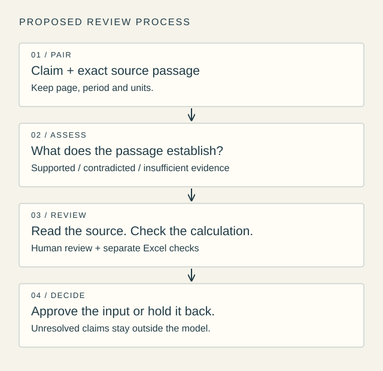

The question after finding the number
My previous Gemini note asked how I would trace every number in a spreadsheet back to a filing. That leaves another question: does the passage I found justify the sentence I want to write?
A citation can make an answer look finished before the reasoning is finished. As a finance student interested in automation, I find that distinction useful. Collecting more information is only helpful if I can tell what it establishes—and where my own assumptions begin.
What I would check in a shipping report
I would start with one shipping company’s annual report and a handful of statements. Beside each statement, I would keep the exact passage, page, reporting period and units. Then I would ask whether the passage supports it, conflicts with it, or leaves it unanswered.
Consider a hypothetical example: a report shows that revenue increased. That supports a statement about revenue growth, provided the periods are comparable. It does not automatically support “freight rates improved.” Volume, business mix or acquisitions could also matter. I would need additional evidence before choosing an explanation. This example is illustrative, not a finding about a particular company.
My starting instruction would be: “Judge this claim using only the supplied passage. Identify the wording that supports or conflicts with it. If the passage does not establish the claim, say what is missing. Do not fill the gap with outside knowledge.” I would read the passage myself and check the arithmetic in Excel separately.
ClaimBench is useful because it separates this task from searching for the right document. But it supplies the excerpt, and some claims are generated or edited. Its confidence threshold is tuned on 30% of claims and then tested on the remainder. That setup does not establish the error rate on my own research, especially where the difficult part is finding a missing footnote.
For a small set of statements, manual checking may be quicker. I have not run this exercise, so I would treat automation as a question to test rather than a benefit already demonstrated.
From a plausible answer to a defensible one
I would measure false approvals: statements marked as supported that fail my source review. I would also record the corrections and time needed to reach an acceptable answer. A wrong explanation attached to a correct number deserves attention even when every formula works.
Eventually, I would like n8n to prepare a review queue with each claim and its evidence together. Contradicted or unresolved claims would stay outside the model, and even apparently supported claims would need my approval. That integration is still a proposed workflow.
The skill I want to build is knowing what a source allows me to conclude. The next question is how to organise unresolved claims so that automation makes review manageable, rather than simply producing more work to check.
A workflow I would like to explore

Sources
- ClaimBench: leaderboard and methodology — Vals AI · Published 2026-10-20; accessed 2026-10-23
- Previous note: Can I trace every number Gemini puts into my model? — Jaehyuk Song · Published 2026-10-17; accessed 2026-10-23